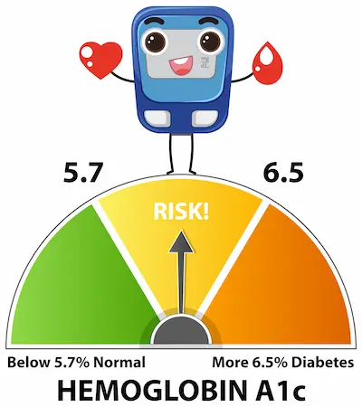

Síndrome metabólico: Señales de alerta y prevención
Los 5 Pilares del Síndrome Metabólico: Más Allá del Diagnóstico
El síndrome metabólico constituye una constelación de alteraciones fisiológicas interconectadas que elevan exponencialmente el riesgo de diabetes tipo 2 y enfermedad cardiovascular. Según los criterios de la Federación Internacional de Diabetes, el diagnóstico requiere la presencia de al menos tres de estos cinco componentes: 1) circunferencia de cintura aumentada (>94 cm hombres, >80 cm mujeres), 2) presión arterial ≥130/85 mmHg, 3) glucosa en ayunas ≥100 mg/dL, 4) triglicéridos ≥150 mg/dL, y 5) colesterol HDL < 40 mg/dL en hombres o < 50 mg/dL en mujeres. Lo más alarmante es que esta condición afecta aproximadamente al 35% de la población adulta en países desarrollados, según datos de la Organización Mundial de la Salud, y su prevalencia aumenta dramáticamente después de los 40 años.
La fisiopatología subyacente implica una compleja interacción entre la resistencia a la insulina, la disfunción del tejido adiposo y la inflamación crónica de bajo grado. El tejido adiposo visceral libera ácidos grasos libres directamente a la circulación portal hepática, lo que promueve la producción hepática de glucosa y VLDL, mientras que las adipocinas proinflamatorias como la leptina y la resistina alteran la señalización insulínica en músculo esquelético e hígado. Estudios de cohorte como el ARIC Study han demostrado que individuos con síndrome metabólico tienen un riesgo 5 veces mayor de desarrollar diabetes tipo 2 y 2-3 veces mayor de sufrir eventos cardiovasculares mayores en comparación con la población general.
Intervenciones para Revertir el Síndrome Metabólico
La reversión del síndrome metabólico es posible mediante intervenciones intensivas en el estilo de vida que aborden simultáneamente sus múltiples componentes. Desde la perspectiva nutricional, la dieta mediterránea modificada ha demostrado una eficacia particular en ensayos clínicos como el PREDIMED, reduciendo la prevalencia del síndrome metabólico en un 30% tras un año de seguimiento. Esta aproximación enfatiza el consumo de ácidos grasos monoinsaturados (aceite de oliva virgen extra, 50-60 ml/día), pescados grasos (2-3 porciones semanales) y alimentos ricos en polifenoles (frutos rojos, nueces, cacao amargo) que mejoran la función endotelial y reducen la inflamación.
El ejercicio físico debe combinar componentes aeróbicos y de resistencia para maximizar los beneficios metabólicos. Un protocolo especialmente efectivo, validado por la Asociación Americana de Diabetes, consiste en: 1) 150 minutos semanales de ejercicio aeróbico moderado (60-70% FCmáx) distribuido en al menos 3 días, 2) 2-3 sesiones de entrenamiento de resistencia (8-10 ejercicios, 2-3 series de 10-15 repeticiones al 60% 1RM), y 3) interrupción frecuente del sedentarismo (3-5 minutos de actividad ligera cada hora). Este abordaje ha demostrado mejorar la sensibilidad a la insulina en un 40-60%, reducir los triglicéridos en un 20-30% y aumentar el colesterol HDL en un 5-10% en pacientes con síndrome metabólico.
El Rol de la Microbiota Intestinal en el Síndrome Metabólico
La disbiosis intestinal (desequilibrio en la microbiota) emerge como un factor clave en el desarrollo del síndrome metabólico. Investigaciones con trasplantes fecales en humanos han demostrado que la microbiota de individuos con síndrome metabólico puede transferir características metabólicas adversas a receptores sanos. Las bacterias intestinales influyen en:
- Extracción de energía: Ciertas cepas (Firmicutes) extraen hasta 150 kcal más por día de la misma comida comparado con microbiomas dominados por Bacteroidetes.
- Inflamación sistémica: Los lipopolisacáridos de bacterias gramnegativas pueden desencadenar inflamación crónica cuando atraviesan la barrera intestinal dañada.
- Resistencia a la insulina: Metabolitos bacterianos como el imidazol propionado interfieren con la señalización insulínica.
Estrategias para modular la microbiota incluyen:
- Consumo de 30+ tipos de vegetales semanales (diversidad de fibras prebióticas)
- Alimentos fermentados (kéfir, chucrut, kimchi) 1-2 porciones diarias
- Suplementación con prebióticos específicos (inulina, FOS) en dosis de 5-10g/día
Tecnología y Monitoreo Avanzado para el Manejo del Síndrome Metabólico
Dispositivos de monitoreo continuo proporcionan retroalimentación en tiempo real para optimizar el manejo:
- Monitores de glucosa continuos (CGM): Identifican respuestas glucémicas individuales a alimentos, permitiendo personalizar la dieta más allá del índice glucémico tradicional. Estudios muestran reducciones del 20% en HbA1c con su uso.
- Wearables de actividad: Los que miden NEAT (termogénesis por actividad no ejercida) son más útiles que los contadores de pasos para aumentar el gasto energético diario.
- Básculas de bioimpedancia avanzada: Modelos de segmentación corporal (como InBody) pueden detectar cambios pequeños en grasa visceral (precisión de ±0.2kg).
Aplicaciones móviles basadas en IA (como Nutrino) analizan patrones alimentarios y sugieren modificaciones personalizadas, demostrando en ensayos clínicos mejor adherencia que los enfoques dietéticos tradicionales. La telemedicina permite seguimiento frecuente sin necesidad de visitas presenciales, crucial para la sostenibilidad del tratamiento.